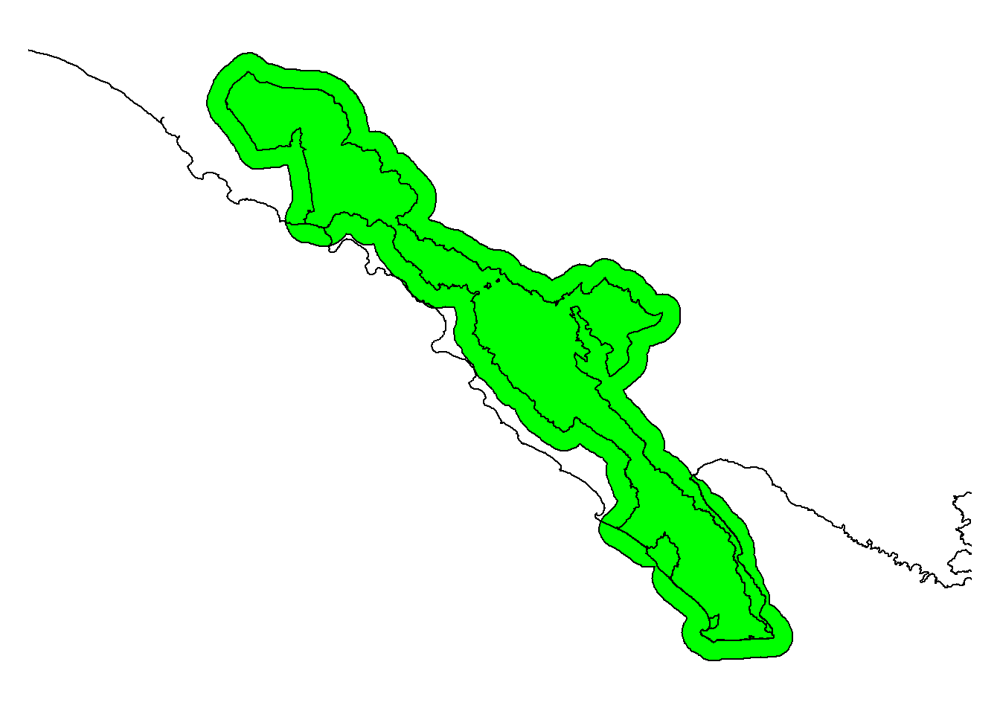
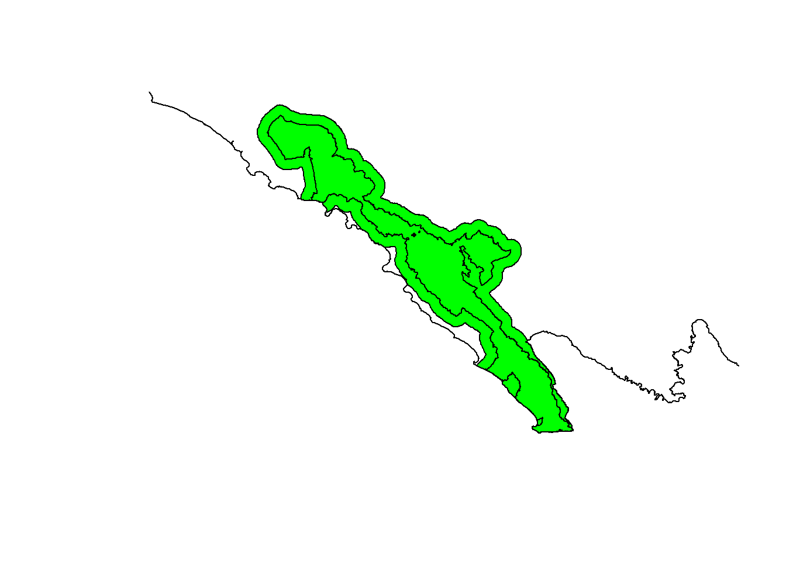
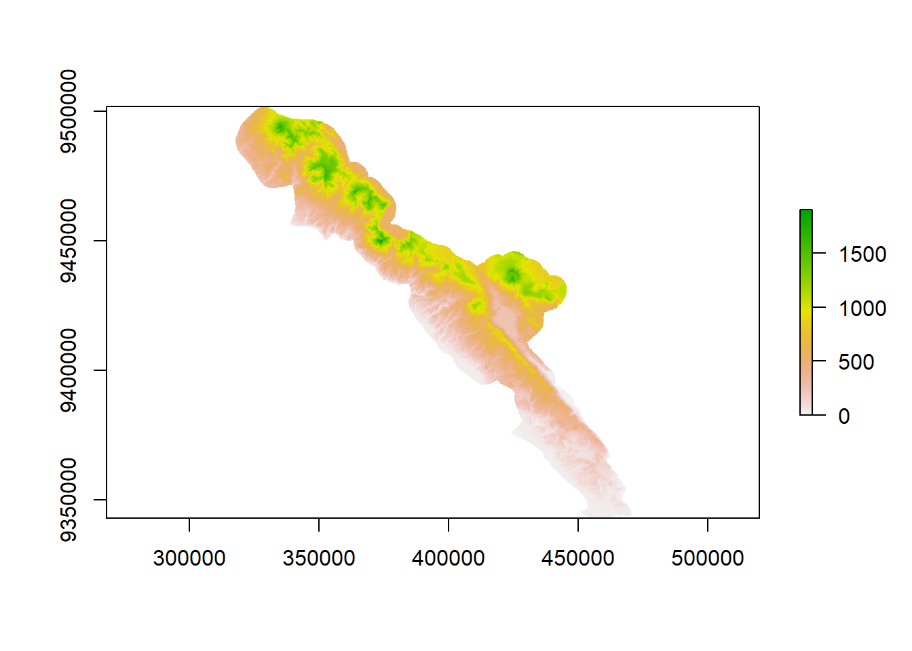
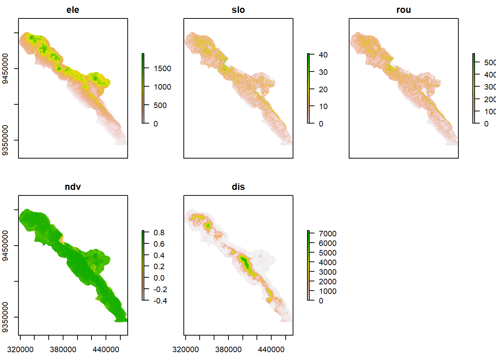
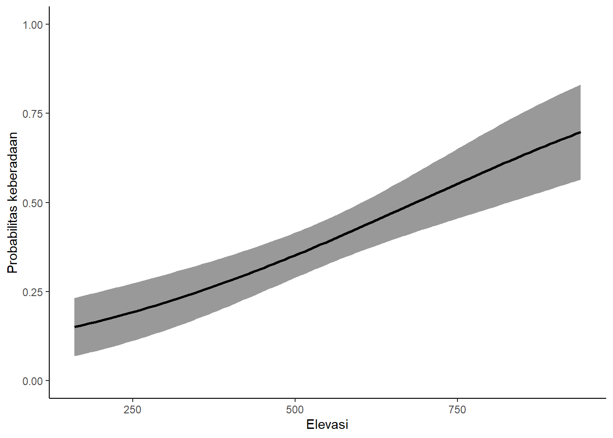
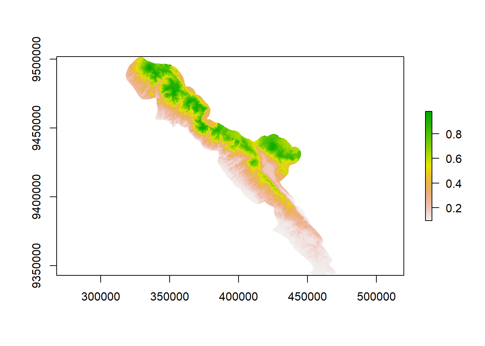
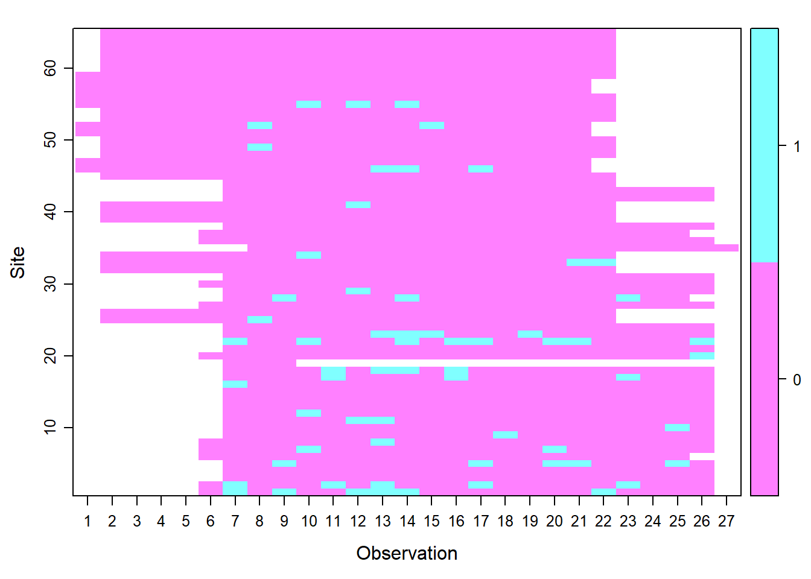
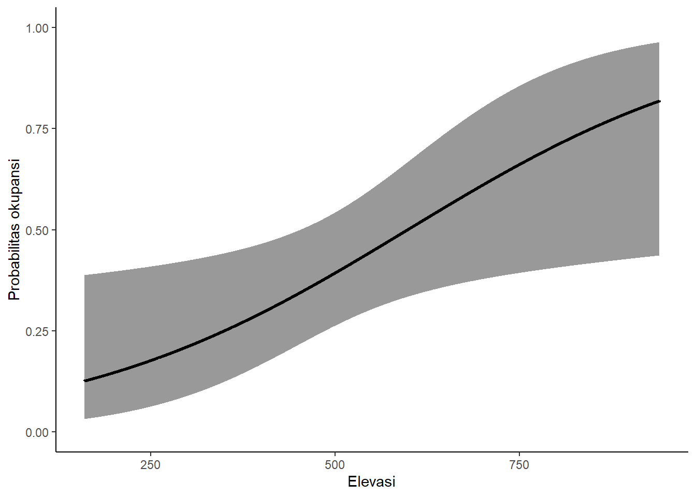
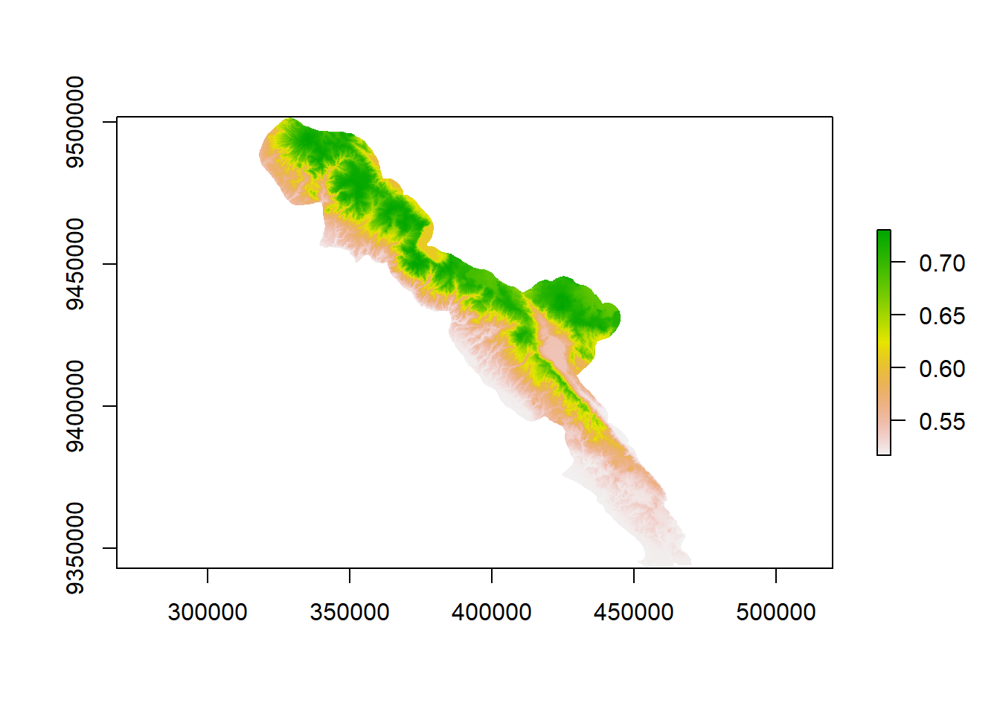

Daftar Isi
Modul Pemodelan Distribusi Spesies
Marsya Sibarani
Oktober 2021
Cakupan Pelatihan
Dalam modul ini, kita akan mempelajari hal berikut:
- Pemrosesan data variabel lingkungan
- Pemodelan distribusi spesies dengan metode
- Maximum Entropy (MaxEnt)
- Generalized Linear Modeling (GLM)
- Occupancy Modelling
Alat yang digunakan untuk pelatihan ini serta tautan untuk mengunduhnya:
- Bahasa pemrograman R https://cran.r-project.org/ dan RStudio https://www.rstudio.com/products/rstudio/download/
- MaxEnt https://biodiversityinformatics.amnh.org/open_source/maxent/
Data yang digunakan untuk pelatihan ini merupakan data hasil survei camera trap di Intensive Protection Zone (IPZ) Taman Nasional Bukit Barisan Selatan (TNBBS) sehingga tidak dapat dibagikan secara publik. Namun, pengguna modul dapat menggunakan sumber data species occurrence lain dengan penyesuaian tertentu agar script dapat bekerja.
Prasyarat
Modul ini dibuat dengan asumsi bahwa pengguna modul sudah memiliki pengetahuan dan keterampilan mendasar tentang hal berikut:
- Sistem Informasi Geografis
- Perbedaan data vektor (point, line, dan polygon) dan data raster
- coordinate reference system (CRS)
- Transformasi data spasial
- Bahasa Pemrograman R
- Pengelolaan working directory
- Tipe-tipe objek di R
- Statistika dasar
- Visualisasi data dengan base R dan package
ggplot2 - Transformasi data dengan perintah
filter,subset,arrange,select,mutate,group_by,summarise
- Pengelolaan dan Analisis Data Camera Trap
- Komponen data camera trap
- Trap nights, capture rate, dan relative abundance index (RAI)
Pendahuluan
Berdasarkan Rondinini et al. (2006), representasi keberadaan spesies dalam ruang dapat dikategorikan menjadi tiga:
Point locality, yaitu titik keberadaan spesies yang berasal dari observasi di lapangan atau koleksi spesimen.
Geographic range, yaitu batas eksternal distribusi spesies. Peta distribusi spesies di halaman IUCN merupakan contoh dari geographic range.
Predicted distribution models, yaitu distribusi spesies yang diprediksi berdasarkan hubungan antara spesies dan faktor-faktor lingkungan. Terdapat dua macam predicted distribution models:
- Deductive Distribution Models
Hubungan spesies-habitat diperoleh dari literatur dan pengetahuan ahli (expert-based). Contoh model distribusi spesies deduktif adalah model kesesuaian habitat >5000 spesies mamalia di dunia yang dilakukan oleh Rondinini et al. (2011). Model tersebut dibuat dengan mengumpulkan pengetahuan ahli tentang karakteristik habitat yang disukai spesies dari website IUCN (iucnredlist.org), kemudian preferensi habitat spesies tersebut dipetakan berdasarkan tipe tutupan lahan, elevasi, dan fitur hidrologi.
Metode ini kurang akurat dibandingkan metode induktif, tetapi efektif dilakukan jika spesies yang akan dimodelkan banyak (ribuan), data koordinat keberadaan spesies tidak tersedia untuk sebagian besar spesies, dan berskala regional atau global. - Inductive Distribution Models
Hubungan spesies-habitat disimpulkan dari kondisi habitat tempat spesies ditemukan. Istilah species distribution modeling biasanya digunakan untuk merujuk pada proses atau metode pembuatan peta distribusi induktif.
Metode ini lebih akurat dibandingkan dengan metode deduktif karena menggunakan titik koordinat keberadaan spesies. Namun, tidak efektif untuk memodelkan banyak spesies.
- Deductive Distribution Models

Gambar 1. Representasi keberadaan spesies dalam ruang
Species Distribution Modelling merupakan metode untuk memprediksi distribusi spasial spesies sebagai suatu fungsi terhadap variabel-variabel lingkungan. Secara umum, SDM terbagi menjadi dua kategori berdasarkan metode komputasinya:
- Statistical Models
Metode ini menggunakan framework statistik, pada umumnya berbasis regresi linier, untuk memodelkan hubungan spesies-habitat. Contoh metode statistik untuk melakukan SDM adalah generalized linear model (GLM), generalize additive model (GAM), multivariate adaptive regression splines, dan occupancy modeling. - Machine Learning
(penjeasan). Contoh metode: maximum entropy (Maxent) dan artificial neural network.
Gambar 2. Proses pemodelan distribusi spesies
Hal pertama yang perlu dilakukan untuk membuat pemodelan distribusi spesies adalah membuat konsep. Pertanyaan-pertanyaan arahan yang dapat digunakan antara lain:
- Spesies apa yang akan dimodelkan?
- Apa sumber daya yang digunakan spesies untuk bertahan?
- Faktor apa saja yang membatasi pertumbuhan populasi spesies?
- Gangguan manusia apa yang memengaruhi kesintasan spesies?
- dsb.
Pertanyaan-pernyataan ini dapat membantu kita dalam menentukan variabel lingkungan yang akan dipakai dalam pemodelan. Setelah membuat konsep pemodelan, tahap selanjutnya adalah persiapan data, yaitu:
- Data keberadaan spesies
- Maxent: species presence
- GLM: species presence dan absence
- Okupansi: detection dan non-detection
- Variabel lingkungan
Biasanya, tahap inilah yang memakan paling banyak waktu proses pemodelan, bahkan bisa mencapai > 50% total waktu.
Bentuk data keberadaan spesies berbeda untuk setiap metode sehingga akan dibahas pada setiap bab metode pemodelan. Namun, variabel lingkungan yang akan digunakan hampir sama sehingga akan dibahas terlebih dahulu.
Persiapan Data: Pemrosesan Data Spasial Variabel Lingkungan
Untuk menentukan variabel lingkungan apa saja yang akan digunakan untuk pemodelan, kita harus mengetahui ekologi spesies yang akan dimodelkan dan skala pemodelan. Misalnya, jika kita ingin memodelkan satwa arboreal seperti siamang, faktor utama yang penting bagi keberadaannya adalah struktur tajuk pohon yang memungkinkan mereka bergerak dan sumber pakan, yaitu buah dan daun pohon di hutan primer atau sekunder. Oleh karena itu, kita dapat mengasumsikan bahwa data spasial yang memengaruhi keberadaannya adalan data yang terkait kualitas habitat hutan, misalnya persentase tajuk hutan, tutupan lahan hutan primer dan sekunder, jarak dari tepi hutan, NDVI. Namun, jika spesies yang akan dimodelkan adalah tumbuhan, mungkin faktor lingkungan terkait iklim, cuaca, dan tanah lebih berpengaruh, misalnya curah hujan tahunan, suhu minimal dan maksimal, dan komposisi tanah.
Selain sumber daya, variabel lingkungan lain yang dapat memengaruhi keberadaan satwa adalah gangguan manusia. Hal ini dapat direpresentasikan sebagai pengaruh langsung, misalnya tutupan lahan perkebunan dan permukiman sebagai nonhabitat (tergantung spesiesnya), maupun secara tidak langsung, misalnya kepadatan manusia kita asumsikan berkorelasi dengan intensitas aktivitas manusia di dalam kawasan hutan atau polusi dan keberadaan jalan sebagai proksi terhadap perburuan dan perambahan.
Data spasial yang akan digunakan sebagai prediktor lingkungan dalam pemodelan distribusi spesies harus memiliki extent, resolusi, dan CRS yang sama. Beberapa metode transformasi data spasial yang sering digunakan untuk pemrosesan prediktor lingkungan adalah:
- Convert vector to raster
Digunakan jika data dasar yang digunakan dalam format vektor sehingga perlu dikonversi menjadi raster
Contoh: tutupan lahan - Resample
Digunakan data dasar sudah dalam raster, tetapi extent, resolusi, atau CRS belum sama
Contoh: elevasi, NDVI - Terrain analysis
Untuk memperoleh data turunan dari Digital Elevation Model (DEM)
Contoh: slope, roughness - Euclidean distance
Untuk memperoleh jarak ke suatu fitur
Contoh: jarak ke tepi hutan, jarak ke pemukiman, jarak ke sungai
Data Latihan
Untuk praktik ini, kita akan menggunakan lima variabel lingkungan yang open source, yaitu elevasi, kemiringan lereng, roughness, NDVI, dan jarak dari tepi hutan. Sebelumnya, kita perlu memasang package yang akan digunakan untuk membuat raster variabel lingkungan dengan perintah install.packages(c("rgdal","rgeos","sp","raster","tidyverse")). Jika sudah terpasang, aktifkan package tersebut dengan perintah library
library(rgdal);library(rgeos);library(sp);library(raster)
library(tidyverse)Tahap selanjutnya adalah menentukan cakupan area pemodelan yang akan dijadikan sebagai template raster variabel lingkungan. Kita dapat menggunakan batas kawasan untuk hal ini.
Jika area studi adalah pulau, batas ekologis distribusi spesies jelas karena area daratan dibatasi oleh laut. Namun, jika area studi adalah buatan manusia, seperti kawasan taman nasional atau cagar alam yang dikelilingi oleh fitur daratan juga, spesies dapat bergerak keluar dari batas kawasan sehingga kita perlu membuat buffer batas kawasan. Jarak buffer untuk SDM tidak ada ketentuan khusus. Intinya, kita hanya ingin melihat prediksi distribusi spesies di sekitar batas kawasan dan buffer ini tidak memengaruhi hasil prediksi (berbeda dengan analisis SECR di mana jarak buffer berpengaruh terhadap perhitungan). Jarak sejauh 3-10 km sudah cukup.
Jika terdapat bagian kawasan yang berbatasan langsung dengan badan air, misalnya danau besar atau laut, bagian tersebut perlu dipotong karena merupakan nonhabitat. Hal sebaliknya berlaku jika spesies yang kita kaji spesies akuatik.
Kemudian, kita perlu menentukan resolusi template raster. Resolusi untuk semua variabel lingkungan sebaiknya berdasarkan variabel lingkungan yang data aslinya berformat raster dan resolusinya paling besar. Misalnya diketahui ada dua variabel, yaitu elevasi beresolusi 90x90m dan citra landsat dengan resolusi 30x30m. Resolusi yang digunakan adalah 90x90m. Raster dengan resolusi lebih kecil dapat di-resample ke resolusi yang lebih besar dengan dirata-ratakan. Namun, men-scale down raster ke resolusi yang lebih kecil tidak dianjurkan.
Data yang akan kita gunakan pada latihan ini yang resolusinya paling besar adalah data elevasi (90x90m). Idealnya, kita memakai resolusi ini, tetapi semakin kecil resolusi, semakin banyak jumlah petak (grid/cell) raster yang akan diproses sehingga waktu pemrosesan akan lebih lama. Perbedaan waktunya bisa selama beberapa jam hingga beberapa hari, tergantung besar area studi. Untuk efisiensi waktu, dalam latihan ini kita akan memakai resolusi 250x250m. Resolusi ini sebenarnya juga dapat digunakan untuk penelitian atau publikasi di jurnal ilmiah asalkan cakupan area studinya cukup besar, misalnya satu taman nasional. Namun, jika area studi kecil, seperti Stasiun Penelitian Way Canguk yang luasnya 800 hektar, resolusi ini terlalu besar.
Dalam contoh ini, kita akan memakai contoh Taman Nasional Bukit Barisan Selatan dan membuat buffer sejauh 5 km.
# CRS yang akan digunakan
utm48s <- CRS("+proj=utm +zone=48 +south +datum=WGS84 +units=m +no_defs")
wgs <- CRS("+proj=longlat +datum=WGS84 +no_defs")
# Batas kawasan TNBBS, data sudah dalam UTM
bbs <- readOGR("Input Data/bbs_dissolve2.shp")
# Batas daratan Pulau Sumatera, data dalam geographic CRS
sumatra <- readOGR("Input Data/Sumatra_main-island.shp")# Mengubah CRS sumatra menjadi UTM 48S
sumatra <- spTransform(sumatra, utm48s)
# Membuat buffer. Keluaran berformat vektor
bbsbuffer <- buffer(bbs, width=5000) # width dalam satuan meter
par(mar=c(1,1,1,1))
plot(bbsbuffer, col="green"); plot(bbs, add=T); plot(sumatra, add=T)
Ada bagian template yang masuk ke laut sehingga perlu dipotong.
# Memotong bagian laut menggunakan batas Pulau Sumatera
bbsbuffer <- raster::intersect(bbsbuffer,sumatra)
plot(bbsbuffer, col="green"); plot(bbs, add=T); plot(sumatra, add=T)
# Konversi polygon bbsbuffer menjadi raster dengan resolusi 250x250m
bbstemp <- raster(vals=NULL,ext=extent(bbsbuffer),resolution=c(250,250),crs=utm48s)1.1 Elevasi
Data elevasi yang digunakan adalah Shuttle Radar Topographic Mission (SRTM) 90m Digital Elevation Model yang dapat diperoleh dari https://cgiarcsi.community/data/srtm-90m-digital-elevation-database-v4-1/. Data SRTM juga tersedia dalam resolusi yang lebih kecil, yaitu 30m, yang dapat diunduh dari https://earthexplorer.usgs.gov/, tetapi untuk latihan ini, kita akan memakai yang 90m.
Pertama, kita akan memanggil data elevasi ke R dengan perintah raster. Data yang asli sebenarnya berupa petak-petak berukuran sekitar 520x520km dan bisa saja area penelitian kita mencakup lebih dari satu petak SRTM. Oleh karena itu, kami sudah menggabungkan petak-petak SRTM untuk seluruh Sumatera pada data raster Sumatra_srtm90m.tif.
# Memanggil data elevasi
elesumatra <- raster("Input Data/Sumatra_srtm90m.tif")
# Resample elevasi ke template raster dengan CRS UTM 48S dan resolusi 250m
ele <- projectRaster(from=elesumatra,to=bbstemp)Raster mencakup seluruh extent bbstemp sehingga kita perlu memotongnya menggunakan poligon bbsbuffer
# Sebelum dipotong
plot(ele)
# Memotong raster dengan batas poligon bbsbuffer
ele <- mask(ele, bbsbuffer)
# Setelah dipotong
plot(ele)
Kemudian kita menulis raster ke dalam format .asc (wajib untuk Maxent) di folder bernama Predictor di working directory kita. Buat folder Predictor terlebih dahulu sebelum menjalankan perintah di bawah ini.
# Ekspor raster
writeRaster(ele, "Predictors/res250m_elevation.asc")
# Hapus elesumatra agar tidak memenuhi memori
rm(elesumatra)1.2 Kemiringan lahan (slope) dan keterjalan tapak (roughness)
Slope dan roughness merupakan data turunan yang dibuat dari data elevasi menggunakan fungsi terrain analysis.
# Slope
slo <- terrain(ele, opt="slope", unit="degrees")
writeRaster(slo, "Predictors/res250m_slope.asc")
# Roughness
rou <- terrain(ele, opt="roughness")
writeRaster(rou, "Predictors/res250m_roughness.asc")1.3 NDVI
Normalized difference vegetation index (NDVI) adalah indeks yang menguantifikasi kepadatan vegetasi berdasarkan spektrum cahaya near-infrared (NIR), yang dipantulkan tumbuhan, dan spektrum cahaya merah (R), yang diserap oleh tumbuhan. NDVI berkisar antara -1 (tidak ada tumbuhan, misalnya badan air) hingga +1 (kepadatan vegetasi tinggi). NDVI dihitung dengan menggunakan nilai reflektansi spektrum cahaya pada vegetasi dari citra satelit multispektral. Berikut adalah rumus untuk kalkulasi NDVI: \[\text{NDVI }=\displaystyle \frac{(\text{NIR }-\text{ R})}{(\text{NIR }+\text{ R})}\]
Nilai band NIR dan merah dapat diperoleh dari citra satelit Landsat, tetapi jika area studi luas, biasanya akan terdapat “lubang” awan. Namun, kita dapat menggunakan citra Landsat tahun 2019 bebas awan oleh Hansen et al. (2013) yang dapat diunduh dari https://earthenginepartners.appspot.com/science-2013-global-forest/download_v1.7.html. Karena satu petak data besar dan akan memakan waktu yang lama jika kita run dari R, dalam latihan ini, kita akan menggunakan data yang sudah dipotong. Berdasarkan website tersebut, diketahui bahwa citra terdiri dari empat band, yaitu : - Layer 1: Band 3 (merah)
- Layer 2: Band 4 (NIR)
- Layer 3: Band 5 (Short-Wave Infrared/SWIR)
- Layer 4: Band 7 (SWIR)
Jadi, kita akan memakai layer pertama (merah) dan kedua (NIR).
# Panggil data
landst <- brick("Input Data/Hansen_GFC-2019-v1.7_last_00N_100E_clipped.tif")
# Resample data Landsat ke template raster
landst <- projectRaster(from=landst, to=bbstemp)
# harap bersabar karena agak lama
# Pot
landst <- mask(landst , bbsbuffer)
# Hitung NDVI
ndv <- (landst[[2]] - landst[[1]]) / (landst[[2]] + landst[[1]])
# angka di dalam kurung kotak menunjukkan urutan nomor layer
writeRaster(ndv, "Predictors/res250m_ndvi.asc")1.4 Jarak dari tepi hutan
Jarak dari tepi hutan bernilai 0 jika lokasi berada di luar hutan dan tepat di tepi hutan dan nilai semakin tinggi jika lokasi berada di interior hutan. Untuk mendapatkan variabel ini, kita membutuhkan peta tutupan lahan yang dapat diperoleh dari webgis KLHK. Namun, karena data tutupan lahan ini nasional, biasanya kurang akurat untuk dipakai dalam skala lokal, misalnya satu lokasi TNBBS.
Khusus di TNBBS, telah tersedia data tutupan lahan yang dibuat dari data Landsat dan diklasifikasi menggunakan metode kombinasi antara Maximum Likelihood Classification (MLC) dan interpretasi secara visual (Lubis et al. 2018). Kita akan memakai data tersebut untuk mengukur jarak dari tepi hutan ke interior hutan.
Data tutupan lahan TNBBS berupa data vektor poligon yang terdiri dari 13 kategori tutupan lahan. Pertama, kita akan men-subset data tutupan lahan yang nonhutan, kemudian mengonversi fitur poligon ke raster sehingga fitur nonhutan memiliki nilai 1 dan hutan bernilai NA. Kita men-subset nonhutan, bukan hutan, karena perintah distance mengukur jarak dari suatu petak raster yang memiliki nilai ke kotak raster terdekat yang bernilai NA.
# Memanggil data
lulc <- readOGR("Input Data/lulc_bbs_2000_2019_natural_human_bbsnp.shp")
# 13 kategori tutupan lahan
sort(unique(lulc$LULC_2019))
# Kategori yang hutan
hutan <- c("01. Hutan", "02. Hutan mangrove")
# Subset nonhutan, ! artinya inversi
nonhutan_2019 <- subset(lulc, !(LULC_2019 %in% hutan))
# Memberi nilai 1 untuk fitur nonhutan
nonhutan_2019$nonhutan <- 1
# Konversi vektor ke raster
# Area nonhutan akan bernilai 1, sesuai field="hutan"
# Selain itu, bernilai NA
nonhutan_2019_raster <- raster::rasterize(x=nonhutan_2019, y=bbstemp,
field="nonhutan")
# Menghitung jarak ke tepi hutan
nonhutan_2019_dist <- distance(nonhutan_2019_raster)
# Memotong area TNBBS dan buffer saja
dis <- mask(nonhutan_2019_dist,bbsbuffer)
# Mengekspor ke format .asc
writeRaster(dis,"Predictors/res250m_distance_to_forest_edge_2019.asc")Uji multicollinearity
Sampai di sini, kita sudah memiliki lima raster lingkungan yang akan dipakai sebagai kovariat/prediktor dalam pemodelan distribusi spesies, yaitu elevasi ele, kemiringan lahan slope, keterjalan tapak roughness, NDVI ndvi, dan jarak ke tepi hutan jarakth.
# Gabungkan prediktor dalam satu objek `preds`
preds <- stack(ele, slo, rou, ndv, dis)
# Rename
names(preds) <- c("ele", "slo", "rou", "ndv", "dis")
# Visualisasi prediktor
plot(preds)
Selanjutnya, kita akan melakukan uji multicollinearity untuk mengetahui apakah ada variabel lingkungan yang saling berkorelasi. Dalam pemodelan distribusi spesies, sebaiknya kita tidak menggunakan variabel lingkungan yang saling berkorelasi karena akan mengaburkan hubungan antara variabel lingkungan dengan keberadaan spesies.
Misalnya, keberadaan spesies owa dipengaruhi oleh tutupan tajuk pohon yang tinggi karena owa hanya dapat bergerak di pepohonan. Sementara itu, tutupan tajuk berkorelasi negatif dengan tutupan tumbuhan bawah (understory). Jika kita menggunakan kedua variabel lingkungan dalam model, pengaruh tutupan tajuk pohon dapat tidak muncul karena ada variabel lain yang berkorelasi dengannya dalam model, yaitu tutupan tumbuhan bawah.
Kita akan menggunakan perintah layerStats untuk melakukan uji korelasi Pearson antara kelima prediktor.
corr_pred <- layerStats(preds, stat = "pearson", na.rm = TRUE)
corr_pred$`pearson correlation coefficient`
ele slo rou ndv dis
ele 1.00000000 0.4310828 0.4654733 0.05230923 0.1728235
slo 0.43108280 1.0000000 0.9442662 0.24583976 0.1272130
rou 0.46547333 0.9442662 1.0000000 0.28565051 0.1507951
ndv 0.05230923 0.2458398 0.2856505 1.00000000 0.3231587
dis 0.17282349 0.1272130 0.1507951 0.32315870 1.0000000
$mean
ele slo rou ndv dis
554.2617195 7.4218407 97.0944594 0.6806674 752.5917050 Tidak ada ketentuan mahabenar universal untuk menentukan tinggi atau tidaknya korelasi. Batas yang biasanya digunakan adalah antara 0,6 atau 0,7, tergantung acuan dan kepercayaan masing-masing.
Berdasarkan hasil uji di atas, terlihat bahwa kelerangan dan keterjalan berkorelasi tinggi (0,94) sehingga kita hanya akan menggunakan salah satunya dalam pemodelan. Menentukan variabel mana yang dipilih juga tidak ada ketentuan khusus. Kita bisa menggunakan pertimbangan ekologis, yaitu berdasarkan pengetahuan kita tentang ekologi spesies, variabel mana yang lebih memberikan pengaruh secara langsung. Atau, bisa juga kita gunakan keduanya dalam pemodelan yang terpisah, tetapi tentunya akan memakan waktu yang lebih banyak.
Untuk tujuan latihan ini, kita hanya akan menggunakan kelerengan.
Metode 1: Maxent
Persiapan Data
Data yang dibutuhkan untuk pemodelan menggunakan Maxent adalah data keberadaan spesies (presence only) dan variabel lingkungan dalam format raster yang telah kita buat di bagian sebelumnya. Data keberadaan spesies disimpan dalam format .CSV yang terdiri dari 3 kolom: nama spesies, koordinat X, dan koordinat Y. Dalam satu analisis, kita dapat memodelkan lebih dari satu spesies. Sistem koordinat data spesies dan lingkungan harus sama, misalnya keduanya UTM atau keduanya geographic CRS. Berikut adalah contoh data keberadaan spesies dalam CRS UTM 48S.
| Spesies | X | Y |
|---|---|---|
| Tragulus kanchil | 406523 | 9416378 |
| Tragulus kanchil | 407969 | 9415929 |
| Tragulus kanchil | 412237 | 9415765 |
| Tragulus kanchil | 414739 | 9414233 |
| Tragulus kanchil | 418183 | 9414547 |
| Tragulus napu | 405355 | 9411438 |
| Tragulus napu | 408062 | 9412467 |
| Tragulus napu | 411137 | 9412834 |
| Tragulus napu | 414458 | 9411927 |
| Tragulus napu | 417974 | 9412469 |
Kita akan membuat file .csv untuk input Maxent dari data camera trap.
library(tidyverse);library(readxl)
# Data spesies
spdata <- read_excel("Input Data/DATABASE - BBS_TIGER_SURVEY_2019.xlsx",
sheet="Image") %>%
dplyr::filter(`Genus Species` == "Mydaus javanensis") %>%
dplyr::select(`Genus Species`, `Location ID`)
spdata# A tibble: 275 x 2
`Genus Species` `Location ID`
<chr> <chr>
1 Mydaus javanensis IDN-108-L0001
2 Mydaus javanensis IDN-108-L0001
3 Mydaus javanensis IDN-108-L0001
4 Mydaus javanensis IDN-108-L0001
5 Mydaus javanensis IDN-108-L0001
6 Mydaus javanensis IDN-108-L0001
7 Mydaus javanensis IDN-108-L0001
8 Mydaus javanensis IDN-108-L0001
9 Mydaus javanensis IDN-108-L0001
10 Mydaus javanensis IDN-108-L0001
# ... with 265 more rows# Data lokasi
locdata <- read_excel("Input Data/DATABASE - BBS_TIGER_SURVEY_2019.xlsx",
sheet="Deployment") %>%
dplyr::select(`Location ID`, X, Y) %>%
distinct()
locdata# A tibble: 65 x 3
`Location ID` X Y
<chr> <dbl> <dbl>
1 IDN-108-L0001 410043. 9420108
2 IDN-108-L0002 411656. 9420620
3 IDN-108-L0003 403964. 9417453
4 IDN-108-L0004 405670. 9418788
5 IDN-108-L0005 408496. 9417530
6 IDN-108-L0006 411770. 9417906
7 IDN-108-L0007 414715. 9417847
8 IDN-108-L0008 402775 9416319
9 IDN-108-L0009 406523 9416378
10 IDN-108-L0010 407969. 9415929
# ... with 55 more rows# Menggabungkan data temuan spesies dan lokasi
inputdat <- left_join(spdata, locdata) %>%
distinct() %>% # menghilangkan data duplikasi
dplyr::select(-`Location ID`) # menghapus kolom Location ID
# Mengekspor tabel sebagai file .csv
write.csv(inputdat, "maxent_input_file.csv")Pemodelan
Untuk pemodelan menggunakan Maxent, kita dapat menggunakan perangkat lunak standalone Maxent atau R. Tutorial lengkap penggunaan Maxent dapat diperoleh dari tautan berikut https://www.amnh.org/content/download/141371/2285439/file/LinC3_SpeciesDistModeling_Ex.pdf.
Namun, berikut ini akan diberikan contoh pemodelan Maxent menggunakan R dengan parameter default.
(TBC)
Metode 2: Generalized Linear Model
Persiapan Data
Data keberadaan spesies yang dibutuhkan untuk GLM dalah data presence/absence. Jika spesies di temukan di suatu lokasi survei, lokasi tersebut diberi nilai 1. Jika tidak ada spesies di lokasi tersebut, diberi nilai 0. Kolom spesies bisa lebih dari satu jika kita akan menganalisis multispesies. Berikut contoh data input GLM.
| ID Lokasi | spA | spB |
|---|---|---|
| CT001 | 1 | 0 |
| CT002 | 0 | 1 |
| CT003 | 0 | 1 |
| CT004 | 1 | 1 |
| CT005 | 1 | 1 |
Salah satu kekurangan dari metode GLM adalah kita tidak dapat memastikan ketidakberadaan spesies. Misalnya, kita survei menggunakan camera trap di 10 lokasi dan spesies target ditemukan di 4 lokasi. Di 6 lokasi lainnya, bukan berarti spesies tersebut benar-benar tidak ada. Bisa jadi spesies target ada, hanya tidak terdeteksi. Masalah tentang probabilitas deteksi ini akan dibahas dalam pemodelan okupansi. Namun, asumsi dalam kerangka kerja GLM adalah data absence dianggap sebagai true absence.
Data yang akan kita gunakan di latihan ini adalah data rekaman spesies dari camera trap dan kita akan memodelkan distribusi Mydaus javanensis, tetapi sebagai contoh multispesies, kita akan men-subset juga Paguma larvata.
library(tidyverse);library(readxl)
spdata <- read_excel("Input Data/DATABASE - BBS_TIGER_SURVEY_2019.xlsx",
sheet="Image") %>%
dplyr::filter(`Genus Species` %in% c("Mydaus javanensis",
"Paguma larvata"))
spdata# A tibble: 696 x 21
`Deployment ID` `Location ID` Grid Camera `Image Id` Location `Photo Type`
<chr> <chr> <dbl> <chr> <chr> <chr> <chr>
1 IDN-108-D0011 IDN-108-L0001 1 A GRID1A-19~ PHOTOS_~ Animal
2 IDN-108-D0011 IDN-108-L0001 1 A GRID1A-19~ PHOTOS_~ Animal
3 IDN-108-D0011 IDN-108-L0001 1 A GRID1A-19~ PHOTOS_~ Animal
4 IDN-108-D0011 IDN-108-L0001 1 A GRID1A-19~ PHOTOS_~ Animal
5 IDN-108-D0011 IDN-108-L0001 1 A GRID1A-19~ PHOTOS_~ Animal
6 IDN-108-D0011 IDN-108-L0001 1 A GRID1A-19~ PHOTOS_~ Animal
7 IDN-108-D0011 IDN-108-L0001 1 A GRID1A-19~ PHOTOS_~ Animal
8 IDN-108-D0011 IDN-108-L0001 1 A GRID1A-19~ PHOTOS_~ Animal
9 IDN-108-D0011 IDN-108-L0001 1 A GRID1A-19~ PHOTOS_~ Animal
10 IDN-108-D0011 IDN-108-L0001 1 A GRID1A-19~ PHOTOS_~ Animal
# ... with 686 more rows, and 14 more variables: `Photo Type Identified
# by` <chr>, `Genus Species` <chr>, `IUCN Identification Number` <dbl>,
# `Date_Time Captured` <dttm>, Time <dbl>, Age <chr>, Sex <chr>, `Tiger
# ID` <chr>, `Tiger ID (Refer to ID Convention)` <lgl>, Count <dbl>, `Animal
# recognizable (Y/N, blank)` <lgl>, `Individual Animal notes` <lgl>,
# `Independent Event` <dbl>, Keterangan <chr>Data spesies ini perlu kita modifikasi terlebih dahulu sebelum digabungkan dengan data koordinat lokasi.
spdata <- spdata %>%
dplyr::select(`Location ID`,`Genus Species`) %>% # memilih kolom lokasi dan spesies saja
mutate(presence=1) %>% # assign nilai 1 untuk presence
distinct() %>% # hilangkan duplikasi temuan di lokasi yang sama
spread(key=`Genus Species`,value=presence, fill=0) # membuat matriks lokasi X spesies
spdata# A tibble: 39 x 3
`Location ID` `Mydaus javanensis` `Paguma larvata`
<chr> <dbl> <dbl>
1 IDN-108-L0001 1 0
2 IDN-108-L0002 1 1
3 IDN-108-L0005 1 1
4 IDN-108-L0007 1 1
5 IDN-108-L0008 1 1
6 IDN-108-L0009 1 1
7 IDN-108-L0010 1 0
8 IDN-108-L0011 1 0
9 IDN-108-L0012 1 0
10 IDN-108-L0013 0 1
# ... with 29 more rowsKemudian, kita akan memanggil data lokasi kamera dan koordinat untuk menggabungkan data spesies dengan data lokasi kamera. Kita hanya akan menggunakan tiga kolom yang akan dipilih dengan perintah select. Data lokasi kamera yang digunakan berasal dari survei harimau sehingga dua kamera dipasang berhadapan di satu koordinat/lokasi. Oleh karena itu, kita akan menghilangkan data duplikat kamera dengan perintah distinct.
locdata <- read_excel("Input Data/DATABASE - BBS_TIGER_SURVEY_2019.xlsx",
sheet="Deployment") %>%
dplyr::select(`Location ID`, X, Y) %>%
distinct()
locdata# A tibble: 65 x 3
`Location ID` X Y
<chr> <dbl> <dbl>
1 IDN-108-L0001 410043. 9420108
2 IDN-108-L0002 411656. 9420620
3 IDN-108-L0003 403964. 9417453
4 IDN-108-L0004 405670. 9418788
5 IDN-108-L0005 408496. 9417530
6 IDN-108-L0006 411770. 9417906
7 IDN-108-L0007 414715. 9417847
8 IDN-108-L0008 402775 9416319
9 IDN-108-L0009 406523 9416378
10 IDN-108-L0010 407969. 9415929
# ... with 55 more rowsGabungkan data lokasi kamera dan data keberadaan spesies.
sploc <- left_join(locdata,spdata) %>%
replace(is.na(.), 0) # mengganti NA dengan 0
sploc# A tibble: 65 x 5
`Location ID` X Y `Mydaus javanensis` `Paguma larvata`
<chr> <dbl> <dbl> <dbl> <dbl>
1 IDN-108-L0001 410043. 9420108 1 0
2 IDN-108-L0002 411656. 9420620 1 1
3 IDN-108-L0003 403964. 9417453 0 0
4 IDN-108-L0004 405670. 9418788 0 0
5 IDN-108-L0005 408496. 9417530 1 1
6 IDN-108-L0006 411770. 9417906 0 0
7 IDN-108-L0007 414715. 9417847 1 1
8 IDN-108-L0008 402775 9416319 1 1
9 IDN-108-L0009 406523 9416378 1 1
10 IDN-108-L0010 407969. 9415929 1 0
# ... with 55 more rowsLangkah selanjutnya adalah mengekstrak nilai variabel lingkungan di lokasi kamera. Kita akan kembali menggunakan package untuk analisis data spasial. Aktifkan package terlebih dahulu jika belum.
# Membuat data spasial titik CT
locspatial <- SpatialPoints(coords=locdata[,c("X","Y")], proj4string=utm48s)
# Mengekstrak variabel lingkungan
predvalues <- raster::extract(preds, locspatial)
# Menggabungkan nilai prediktor dengan data temuan spesies
glmdata <- cbind(sploc, predvalues)Fit model
fullmodel <- glm(`Mydaus javanensis` ~ ele+I(ele^2)+slo+ndv+dis,
data=glmdata, family="binomial")
summary(fullmodel)
Call:
glm(formula = `Mydaus javanensis` ~ ele + I(ele^2) + slo + ndv +
dis, family = "binomial", data = glmdata)
Deviance Residuals:
Min 1Q Median 3Q Max
-1.4169 -0.9430 -0.6907 1.1224 2.0915
Coefficients:
Estimate Std. Error z value Pr(>|z|)
(Intercept) 3.210e+00 1.252e+01 0.256 0.798
ele 7.343e-03 1.020e-02 0.720 0.472
I(ele^2) -3.042e-06 8.646e-06 -0.352 0.725
slo -9.366e-03 7.169e-02 -0.131 0.896
ndv -9.308e+00 1.695e+01 -0.549 0.583
dis 2.216e-04 2.436e-04 0.910 0.363
(Dispersion parameter for binomial family taken to be 1)
Null deviance: 86.616 on 64 degrees of freedom
Residual deviance: 78.823 on 59 degrees of freedom
AIC: 90.823
Number of Fisher Scoring iterations: 4Hal terpenting yang perlu dilihat dari hasil di atas adalah tabel Coefficients. Terdapat lima kolom pada bagian tersebut, yaitu kolom nama prediktor, estimasi beta koefisien prediktor, standard error, z-value, dan p-value (Pr(>|z|)). Baris pertama pada tabel tersebut adalah intercept persamaan linier, yaitu nilai prediksi jika seluruh prediktor bernilai 0. Baris kedua dan seterusnya adalah prediktor yang kita modelkan.
Kolom Estimate menunjukkan estimasi beta koefisien masing-masing prediktor. Jika nilai Estimate negatif, semakin tinggi nilai prediktor, semakin rendah probabilitas keberadaan spesies. Sebaliknya, jika nilai Estimate positif, semakin tinggi nilai prediktor, semakin tinggi juga probabilitas keberadaan spesies. Namun, kita perlu mengetahui apakah hubungan tersebut signifikan dengan melihat kolom p-value.
Jika p-value < 0.05, beta koefisien prediktor tersebut signifikan, atau dengan kata lain, prediktor tersebut berpengaruh signifikan terhadap estimasi probabilitas keberadaan spesies. Di contoh ini, tidak ada prediktor yang signifikan pada full model.
Step wise
Langkah selanjutnya adalah mendapatkan model parsimonious dengan metode step wise. Model parsimonious adalah model paling sederhana (prediktor paling sedikit) yang memiliki kemampuan prediksi paling besar. Indeks yang digunakan untuk mengevaluasi model parsimonious adalah Akaike Information Criterion (AIC). Semakin kecil nilai AIC, model tersebut semakin parsimonious.
stepmod <- step(fullmodel)Start: AIC=90.82
`Mydaus javanensis` ~ ele + I(ele^2) + slo + ndv + dis
Df Deviance AIC
- slo 1 78.840 88.840
- I(ele^2) 1 78.948 88.948
- ndv 1 79.126 89.126
- ele 1 79.359 89.359
- dis 1 79.662 89.662
<none> 78.823 90.823
Step: AIC=88.84
`Mydaus javanensis` ~ ele + I(ele^2) + ndv + dis
Df Deviance AIC
- I(ele^2) 1 78.953 86.953
- ndv 1 79.131 87.131
- ele 1 79.359 87.359
- dis 1 79.792 87.792
<none> 78.840 88.840
Step: AIC=86.95
`Mydaus javanensis` ~ ele + ndv + dis
Df Deviance AIC
- ndv 1 79.198 85.198
- dis 1 80.705 86.705
<none> 78.953 86.953
- ele 1 85.158 91.158
Step: AIC=85.2
`Mydaus javanensis` ~ ele + dis
Df Deviance AIC
- dis 1 81.162 85.162
<none> 79.198 85.198
- ele 1 85.191 89.191
Step: AIC=85.16
`Mydaus javanensis` ~ ele
Df Deviance AIC
<none> 81.162 85.162
- ele 1 86.616 88.616Regresi step wise bekerja dengan cara mengeliminasi prediktor satu per satu, lalu membandingkan dengan satu sama lain serta model lengkap. Jika model yang salah satu prediktornya dieliminasi memiliki nilai AIC lebih rendah dari model lengkap, model tersebut dipilih untuk langkah selanjutnya. Hal tersebut terjadi bertahap hingga diperoleh model dengan AIC terendah.
Pada data kita, pada tahap pertama, model tanpa prediktor slo (kelerengan) memiliki nilai AIC terendah (88.840) jika dibandingkan dengan model tanpa salah satu variabel lain dan model lengkap (<none> pada tabel hasil step wise).
Pada langkah kedua, “model lengkap”-nya adalah Mydaus javanensis ~ ele + I(ele^2) + ndv + dis, kemudian prediktor dieliminasi satu per satu. Hasilnya adalah model tanpa prediktor I(ele^2) (fungsi kuadratik elevasi), memiliki AIC terendah (86.953).
Pada langkah ketiga dan seterusnya, diketahui bahwa model Mydaus javanensis ~ ele sebagai model terbaik dengan nilai AIC = 85.162.
summary(stepmod)
Call:
glm(formula = `Mydaus javanensis` ~ ele, family = "binomial",
data = glmdata)
Deviance Residuals:
Min 1Q Median 3Q Max
-1.5476 -0.9216 -0.7323 1.1922 1.8166
Coefficients:
Estimate Std. Error z value Pr(>|z|)
(Intercept) -2.252667 0.856369 -2.630 0.00853 **
ele 0.003289 0.001476 2.228 0.02588 *
---
Signif. codes: 0 '***' 0.001 '**' 0.01 '*' 0.05 '.' 0.1 ' ' 1
(Dispersion parameter for binomial family taken to be 1)
Null deviance: 86.616 on 64 degrees of freedom
Residual deviance: 81.162 on 63 degrees of freedom
AIC: 85.162
Number of Fisher Scoring iterations: 4Membuat response curve
Untuk melihat hubungan antara prediktor dengan prediksi probabilitas keberadaan spesies, kita perlu membuat response curve.
Elevasi
# Data baru untuk response curve
newDat<-data.frame(ele=seq(min(glmdata$ele),max(glmdata$ele),length=100))
# Prediksi
pred <- predict(stepmod, newdata=newDat, type="response", se.fit=TRUE)
# Menggabungkan estimasi dan newDat
glmpred <- cbind(as.data.frame(pred), newDat)
# Plot
glmpred %>%
ggplot(aes(x = ele, y = fit)) +
geom_ribbon(aes(ymin = fit-se.fit, ymax = fit+se.fit),
alpha = 0.5, linetype = "dashed") +
geom_path(size = 1) +
labs(x = "Elevasi", y = "Probabilitas keberadaan") +
theme_classic() +
coord_cartesian(ylim = c(0,1))
Prediksi spasial
Setelah didapatkan model terbaik (model parsimonious), kita akan menggunakannya untuk memprediksi keberadaan Mydaus javanensis di area studi kita dengan perintah predict. Karena kita menggunakan GLM yang variabel responnya biner (1/0), kita perlu mengonversi keluaran dari predict menjadi angka probabilitas yang berkisar antara 0 dan 1 dengan perintah calc dan fungsi plogis.
probpredict <- predict(preds, stepmod, fun=predict)
probglm <- calc(probpredict, fun = function(x){plogis(x)})
plot(probglm)
Kita juga bisa mengekspor peta prediksi probabilitas keberadaan Mydaus javanensis ke dalam format raster.
writeRaster(probglm, filename="GLM_Mydaus_javanensis.tif")Metode 3: Occupancy modeling
Pemodelan okupansi merupakan pemodelan proporsi area yang dihuni oleh satwa dengan mempertimbangkan probabilitas deteksi satwa. Jika kita menemukan satwa di suatu unit sampel (misalnya grid), hal itu berarti satwa tersebut menempati unit sampel tersebut. Namun, jika kita tidak menemukan satwa (nondeteksi), hal itu dapat berarti: - satwa menempati unit sampel, tetapi tidak terdeteksi oleh observer, atau - satwa benar-benar tidak menempati unit sampel (absence).
Berbeda dengan GLM yang mengasumsikan nondeteksi sebagai absence, pemodelan okupansi menggunakan pengambilan sampel berulang (repeated sampling) di setiap unit sampel untuk menghitung probabilitas deteksi \(p\). Replikasi pengambilan sampel dapat berupa pengulangan spasial, misalnya pada survei okupansi harimau se-Pulau Sumatera (SWTS), atau pengulangan temporal, misalnya pada survei camera trap, seperti yang akan kita lakukan pada latihan ini.
Pemodelan okupansi merupakan pemodelan berhierarki karena terdapat dua parameter yang diestimasi, yaitu probabilitas okupansi \(/psi\) dan probabilitas deteksi \(p\).
Persiapan Data
library(tidyverse);library(readxl);library(camtrapR)
spdata <- read_excel("Input Data/DATABASE - BBS_TIGER_SURVEY_2019.xlsx",
sheet="Image") %>%
dplyr::select(LocationID = `Location ID`,
Species = `Genus Species`,
datetime = `Date_Time Captured`)
spdata# A tibble: 122,491 x 3
LocationID Species datetime
<chr> <chr> <dttm>
1 IDN-108-L0001 Argusianus argus 2019-07-02 07:50:01
2 IDN-108-L0001 Argusianus argus 2019-07-02 07:50:02
3 IDN-108-L0001 Argusianus argus 2019-07-05 11:15:47
4 IDN-108-L0001 Argusianus argus 2019-07-05 11:15:48
5 IDN-108-L0001 Argusianus argus 2019-07-05 11:15:49
6 IDN-108-L0001 Argusianus argus 2019-07-14 06:56:02
7 IDN-108-L0001 Argusianus argus 2019-07-14 11:55:21
8 IDN-108-L0001 Argusianus argus 2019-07-14 11:55:21
9 IDN-108-L0001 Argusianus argus 2019-07-16 17:40:17
10 IDN-108-L0001 Argusianus argus 2019-07-16 17:40:19
# ... with 122,481 more rowsKemudian, kita akan memanggil data pemasangan dan pengambilan kamera dan koordinat untuk menggabungkan data spesies dengan data lokasi kamera.
camdata <- read_excel("Input Data/DATABASE - BBS_TIGER_SURVEY_2019.xlsx",
sheet="Deployment") %>%
dplyr::select(DeploymentID=`Deployment ID`,
LocationID=`Location ID`,
X,Y,
Begin=`Camera Deployment Begin Date`,
End=`Camera last picture date`) %>%
dplyr::filter(!is.na(End))
camdata# A tibble: 126 x 6
DeploymentID LocationID X Y Begin End
<chr> <chr> <dbl> <dbl> <dttm> <dttm>
1 IDN-108-D00~ IDN-108-L~ 4.10e5 9.42e6 2019-06-28 00:00:00 2019-11-15 00:00:00
2 IDN-108-D00~ IDN-108-L~ 4.12e5 9.42e6 2019-06-28 00:00:00 2019-11-15 00:00:00
3 IDN-108-D00~ IDN-108-L~ 4.12e5 9.42e6 2019-06-28 00:00:00 2019-11-15 00:00:00
4 IDN-108-D00~ IDN-108-L~ 4.04e5 9.42e6 2019-06-29 00:00:00 2019-11-16 00:00:00
5 IDN-108-D00~ IDN-108-L~ 4.06e5 9.42e6 2019-06-29 00:00:00 2019-06-29 00:00:00
6 IDN-108-D00~ IDN-108-L~ 4.06e5 9.42e6 2019-06-29 00:00:00 2019-11-16 00:00:00
7 IDN-108-D00~ IDN-108-L~ 4.08e5 9.42e6 2019-06-30 00:00:00 2019-11-17 00:00:00
8 IDN-108-D00~ IDN-108-L~ 4.08e5 9.42e6 2019-06-30 00:00:00 2019-11-17 00:00:00
9 IDN-108-D00~ IDN-108-L~ 4.12e5 9.42e6 2019-06-27 00:00:00 2019-11-14 00:00:00
10 IDN-108-D00~ IDN-108-L~ 4.12e5 9.42e6 2019-06-27 00:00:00 2019-11-14 00:00:00
# ... with 116 more rowsMembuat camera operation matrix
CTmatrix <- cameraOperation(CTtable = camdata,
stationCol = "LocationID",
cameraCol = "DeploymentID",
setupCol = "Begin",
retrievalCol = "End",
hasProblems = FALSE,
byCamera = FALSE,
allCamsOn = FALSE,
camerasIndependent = FALSE,
dateFormat = "%Y-%m-%d",
writecsv = TRUE,
outDir = getwd()
)Mengekstrak kovariat
library(sp);library(raster)
ctloc <- camdata %>% dplyr::select(LocationID, X, Y) %>% distinct()
utm48s <- CRS("+proj=utm +zone=48 +south +datum=WGS84 +units=m +no_defs")
ct_sp <- SpatialPoints(coords=ctloc[,c("X","Y")], proj4string=utm48s)
ele <- raster("Predictors/res250m_elevation.asc")
slo <- raster("Predictors/res250m_slope.asc")
rou <- raster("Predictors/res250m_roughness.asc")
ndv <- raster("Predictors/res250m_ndvi.asc")
dis <- raster("Predictors/res250m_distance_to_forest_edge_2019.asc")
preds <- stack(ele,slo,rou,ndv,dis)
names(preds) <- c("ele","slo","rou","ndv","dis")
predvalues <- raster::extract(preds, ct_sp) %>% as.data.frame()
library(PerformanceAnalytics)
chart.Correlation(predvalues, histogram=TRUE, pch=19)Membuat species detection matrix
spdet <- detectionHistory(recordTable = spdata,
species = "Mydaus javanensis",
camOp = CTmatrix,
stationCol = "LocationID",
speciesCol = "Species",
recordDateTimeCol = "datetime",
recordDateTimeFormat = "%Y-%m-%d %H:%M:%S",
occasionLength = 7,
minActiveDaysPerOccasion = 4,
day1 = "survey",
includeEffort = FALSE,
scaleEffort = FALSE,
occasionStartTime = 0,
datesAsOccasionNames = TRUE,
timeZone = "Asia/Jakarta",
writecsv = F)Fit model
library(unmarked)
umf <- unmarkedFrameOccu(y = spdet$detection_history,
siteCovs = predvalues)
plot(umf)
# Fit models
mods <- list()
(mods$null <- occu(~1 ~1, data = umf))
(mods$ndv._ <- occu(~ndv ~1, data = umf))
# Model selection
fitlist <- fitList(fits=mods)
(modSel <- modSel(fitlist, nullmod = 'null'))(mods$ndv.ele <- occu(~ndv ~ele, data = umf))
(mods$ndv.ele2 <- occu(~ndv ~ele+I(ele^2), data = umf))
(mods$ndv.slo <- occu(~ndv ~slo, data = umf))
(mods$ndv.ndv <- occu(~ndv ~ndv, data = umf))
(mods$ndv.dis <- occu(~ndv ~dis, data = umf))
# Seleksi model
fitlist <- fitList(fits=mods)
(modSel <- modSel(fitlist, nullmod = 'null'))(mods$ndv.eleslo <- occu(~ndv ~ele+slo, data = umf))
(mods$ndv.elendv <- occu(~ndv ~ele+ndv, data = umf))
(mods$ndv.eledis <- occu(~ndv ~ele+dis, data = umf))
# Seleksi model
fitlist <- fitList(fits=mods)
(modSel <- modSel(fitlist, nullmod = 'null'))Model terbaik blablabla
# Best model
bestmod <- mods$ndv.ele
summary(mods$ndv.ele)
Call:
occu(formula = ~ndv ~ ele, data = umf)
Occupancy (logit-scale):
Estimate SE z P(>|z|)
(Intercept) -2.63821 1.04851 -2.52 0.0119
ele 0.00441 0.00197 2.24 0.0250
Detection (logit-scale):
Estimate SE z P(>|z|)
(Intercept) -14.0 6.25 -2.24 0.0249
ndv 15.7 8.21 1.92 0.0553
AIC: 460.7946
Number of sites: 65
optim convergence code: 0
optim iterations: 102
Bootstrap iterations: 0 coef(mods$ndv.ele) # Logit scale psi(Int) psi(ele) p(Int) p(ndv)
-2.638207318 0.004414873 -14.013445617 15.735498327 plogis(coef(mods$ndv.ele)) # Original scale psi(Int) psi(ele) p(Int) p(ndv)
6.671958e-02 5.011037e-01 8.204225e-07 9.999999e-01 Membuat response curve
predpsi <- predict(bestmod, type="state")
# Make new covariate data
occu_newdata <- data.frame(ele = seq(min(predvalues$ele),
max(predvalues$ele),by=0.1),
slo = mean(predvalues$slo),
ndv = mean(predvalues$ndv),
dis = mean(predvalues$dis))occu_toppred <- predict(bestmod, occu_newdata, type="state")
occu_toppred_df <- data.frame(occu_toppred,occu_newdata) occu_toppred_df %>%
ggplot(aes(x = ele, y = Predicted)) +
geom_ribbon(aes(ymin = lower, ymax = upper), alpha = 0.5, linetype = "dashed") +
geom_path(size = 1) +
labs(x = "Elevasi", y = "Probabilitas okupansi") +
theme_classic() +
coord_cartesian(ylim = c(0,1)) 
Prediksi spasial
Menggunakan best model
predoccu <- predict(preds, bestmod, type="state")
probocc <- calc(predoccu, fun = function(x){plogis(x)})plot(probocc)
writeRaster(prob_sp, filename="Occupancy_Mydaus_javanensis.tif")Membandingkan Peta Ketiga Metode
par(mfrow=c(1,2))
plot(probglm, main="GLM")
plot(probocc, main="Occupancy")Referensi
Hansen, M. C. C, P V Potapov, R. Moore, M. Hancher, S. A. a Turubanova, A. Tyukavina, D. Thau, et al. 2013. “High-resolution global maps of 21st-century forest cover change.” Science 342 (November): 850–54. https://doi.org/10.1126/science.1244693.
Lubis, M I, S Hussein, H Wandono, and W Marthy. 2018. “Monitoring perubahan tutupan hutan di bentang alam Bukit Barisan Selatan periode 2000-2017.” Bukit Barisan Selatan National Park & WCS Indonesia Program.
Rondinini, Carlo, Moreno Di Marco, Federica Chiozza, Giulia Santulli, Daniele Baisero, Piero Visconti, Michael Hoffmann, et al. 2011. “Global habitat suitability models of terrestrial mammals.” Philosophical Transactions of the Royal Society B: Biological Sciences 366: 2633–41. https://doi.org/10.1098/rstb.2011.0113.
Rondinini, Carlo, Kerrie A. Wilson, Luigi Boitani, Hedley Grantham, and Hugh P. Possingham. 2006. “Tradeoffs of different types of species occurrence data for use in systematic conservation planning.” Ecology Letters 9 (10): 1136–45. https://doi.org/10.1111/j.1461-0248.2006.00970.x.